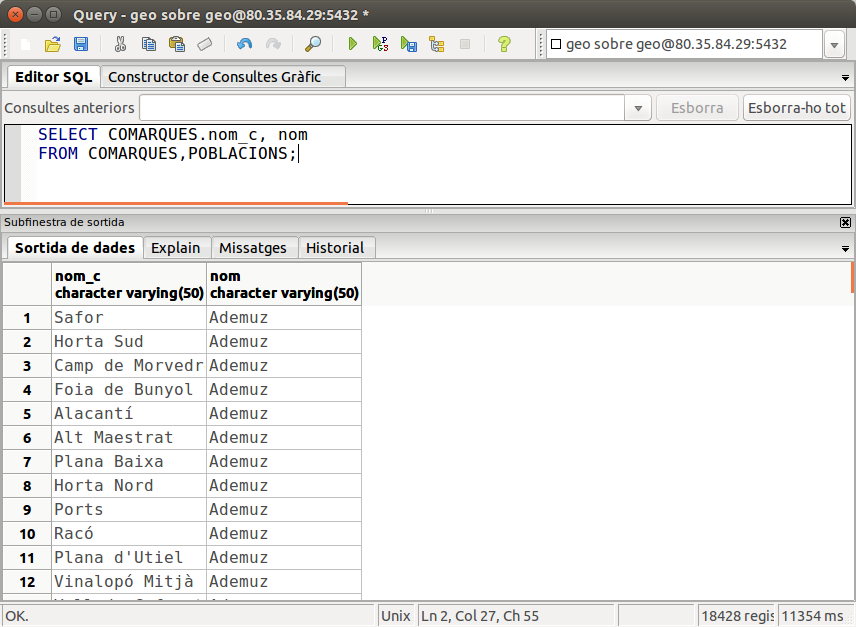

2.2.1 Producte cartesià
La manera més senzilla és posar les taules separades per comes, però segurament el resultat no és el que esperàvem.
Per exemple podem fer la següent sentència:
SELECT COMARQUES.nom_c, nom
FROM COMARQUES,POBLACIONS;
Nota
Observeu que hem posat el nom de la taula davant del camp nom_c, perquè les dues taules tenen un camp amb aquest nom. Aquesta operació s'anomena qualificació. Si no qualificàrem amb el nom de la taula davant, hi hauria ambigüitat, no sabria a quin camp es refereix, si el d'una taula o el de l'altra. Quan els noms dels camps són diferents i per tant no coincideixen en les dues taules, no cal qualificar el camp (com per exemple amb el camp nom)
Si executem la sentència, veurem que tindrem un nombre de files inesperadament alt, 18.428 files !!! I si analitzem les files veurem el perquè: s'ha combinat cada comarca amb tots els pobles (siguen de la comarca o no).

Aquesta operació s'anomena PRODUCTE CARTESIÀ (cross join), i es caracteritza en què cadascuna de les files d'una taula es combina amb totes les files de l'altra taula. El nombre de files resultant serà, doncs, el resultat de multiplicar el nombre de files d'una taula pel nombre de files de l'altra taula (en el nostre cas 34 x 542 = 18428).
Rarament voldrem fer un producte cartesià. El més normal serà combinar una miqueta millor les taules. En el nostre exemple segurament ens interessarà molt més combinar cada comarca amb les seues poblacions.
Llicenciat sota la Llicència Creative Commons Reconeixement NoComercial SenseObraDerivada 2.5